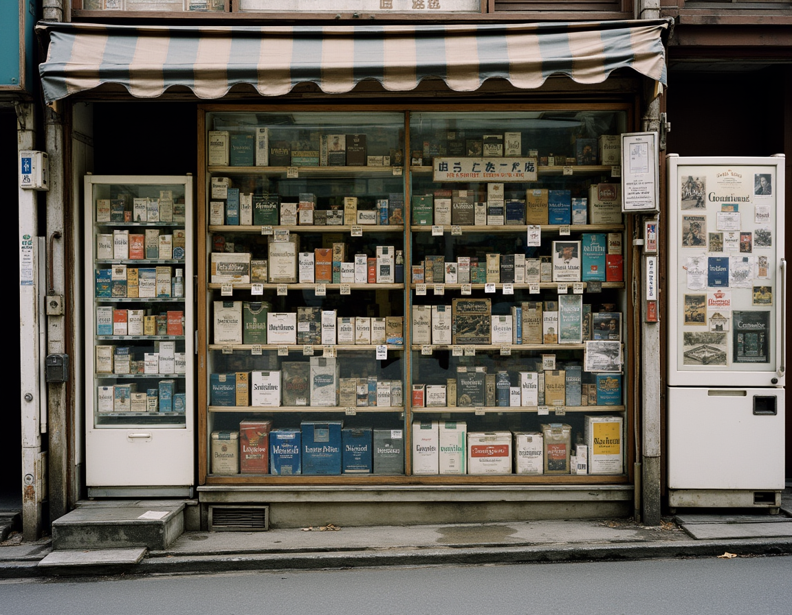
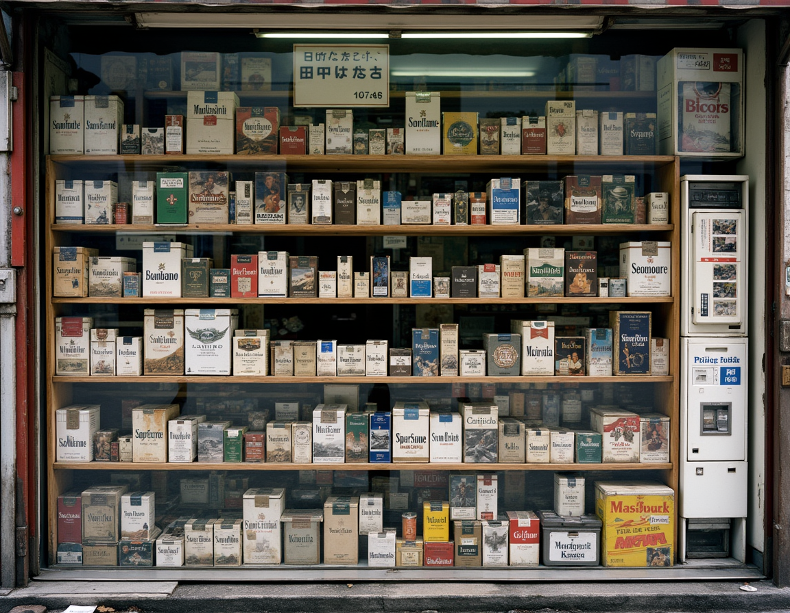
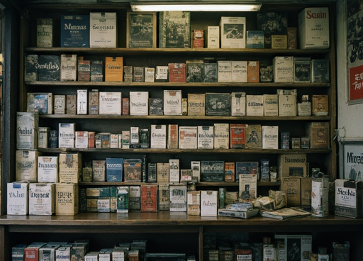
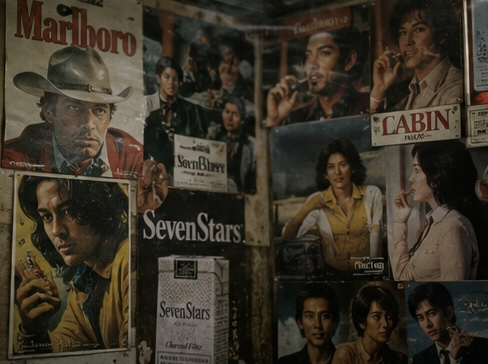
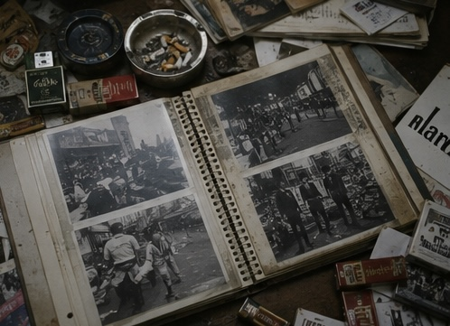
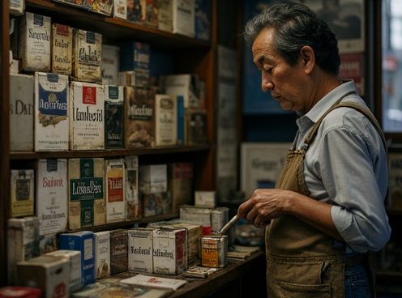

Hiroshi Tanaka
禁煙 No smoking
Osaka 1985–1990
アーカイブについて About the Archive
本資料群は、大阪・新世界商業地区の路地にあった田中煙草店（田中煙草店）に関する現存資料を再構成したものである。店頭表示によれば番号は 107-46。資料の蓄積期間はおおむね 1972年から1990年 までと推定される。いずれも当時の市の文化財登録、府のたばこ小売業者アーカイブ、ならびに公的な商業登録への提出を目的としたものではない。
運営者・田中博（たなか ひろし、1938年大阪生）は、小売許可のもと店を維持しながら、喫煙に関連する物品および街路風景の記録を私的に行った。分類・目録は個人用であり、生前の完全な索引は発見されていない。
2018年、孫の 田中美子（たなか みこ／Niko Tanaka） が長年閉鎖されていた店舗に再入した際、内部はほぼ当時のまま残されていた（棚の埃、ガラス越しのパッケージ、壁面広告、自動販売機、作業台のリング綴じアルバム）。本編纂では、その調査で得られた未公開写真資料 6点（図版 T-01〜T-06） および運営者肖像 1点（図版 T-07） を主要な視覚的証拠とする。いずれも2018年以前に外部研究者の知るところとなっていたものではない。
The materials assembled here are a reconstructed collection relating to the Tanaka family tobacco shop (田中煙草店) in a commercial lane of Shinsekai, Osaka. Storefront materials give the designation 107-46. Accumulation is estimated at roughly 1972 through 1990. None of these materials were intended for municipal heritage deposit, prefectural tobacco-retailer archives, or official commercial registration.
The operator, Hiroshi Tanaka (b. Osaka, 1938), maintained the shop under retail license while privately gathering smoking-related objects and street records. Filing was personal; no complete index from his lifetime has been recovered.
In 2018, his granddaughter Niko Tanaka re-entered the long-sealed premises and found the interior largely unchanged (dust on shelves, packs behind glass, wall advertisements, vending machines, spiral-bound albums on the work counter). This compilation treats six unpublished plates (T-01–T-06) and one operator portrait (T-07) from that survey as primary visual evidence. None were known to outside researchers before 2018.
図版 T-01（店舗外観・路面） は、昭和後期型の tabako-ya を示す：茶色と濃色の縞模様のスカラップ庇、湿ったアスファルト上の低いコンクリート段、隣接壁の露出配線。中央に大型木枠の陳列窓、白色の機械式たばこ自動販売機が左右二基。右側機体には、大小さまざまなポスター・切り抜き・おそらく接触印画が無秩序に貼られたコラージュが見える。

図版 T-06（店内側から見た陳列窓） では、ガラス内側の手書き看板（日本語の店名）と、六段の商品棚が確認できる。ガラス面の反射から、大通りではなく路地またはアーケード状商業空間に面していることが推測される。

通行者の多くにとってここは喫煙具を買うだけの場所であった。再構成メモ（2019）では、居酒屋の換気、反対側のコインランドリー、徒歩圏のジャンジャン横丁への近接を含め、新世界の裏商業圏における固定観測点であったと記される。
Plate T-01 (exterior, street front) shows a typical late-Showa tabako-ya: tan and dark striped scalloped awning, low concrete step on damp asphalt, exposed conduit on the neighboring wall. A large wooden display case stands at center; two white mechanical cigarette vending machines flank it—the right unit bears a dense collage of posters, clippings, and apparent contact prints.
Plate T-06 (window display, interior-facing) confirms hand-painted signage in Japanese behind the glass and six tiers of stock. Reflections suggest a lane or covered commercial passage rather than a main boulevard.
For most passers-by the shop was only a place to buy cigarettes. Reconstruction notes (2019) describe it as a fixed observation point in Shinsekai's back-commercial zone: izakaya vent, laundromat opposite, Janjan Yokocho within walking distance.
図版 T-04（カウンター裏・棚列） — 木製棚おおよそ六段、蛍光灯一本による上方照明、下段は深い影。クリーム色・退色した青系の箱が隙間なく並ぶ。カウンター上には箱の山と、台帳または新聞と思われる紙束が商業記録と収集物の区別なく置かれている。

図版 T-06（窓口陳列） — ラテン文字のラベルとして Santamaria、Bambano、Seomoure、Spursome、Canfield、Masiburk 等が読み取れる（日本語表記と混在）。日本たばこ産業の公式銘柄表との照合は 未了；一部は輸入品、地域ロット、または褪色による誤読の可能性がある。
図版 T-05（店内広告壁） — マールボロのカウボーイポスター（左上）、大型 セブンスターズ パネル、小型 キャビン 表示、1970–80年代雑誌由来のファッション・ライフスタイル広告が層状に重なる。接着方式の記録なし。

図版 T-02（作業台） — 金属製灰皿（吸い殻・灰）、ガラスまたは陶器の小灰皿、セブンスターズ系の緑箱、国産 ピース／ホープ 系に類する赤箱、平たく潰れた紙箱、日本語の雑誌断片、携帯 ライター、ラテン文字 「Alan…」 のみ読める卡片（全文不明）。

博は「外装の変更は暦より正確」と繰り返し述べた（1981年欄外メモと一致）。収集日の欠落、満箱と空箱の混在、棚ごとの論理の不在など、目録上の不整合は前回評価どおりである。
Plate T-04 (rear shelving) — roughly six wooden tiers, single overhead fluorescent, deep shadow on lower shelves. Cream and faded blue cartons packed edge to edge; counter holds stacks plus ledgers or newspapers not separated from collection items.
Plate T-06 (window stock) — Latin-script labels including Santamaria, Bambano, Seomoure, Spursome, Canfield, Masiburk among Japanese type. Cross-check against official Japan Tobacco registers is pending; some names may be imports, regional lots, or misread faded type.
Plate T-05 (advertising wall) — Marlboro cowboy poster (upper left), large Seven Stars panel, smaller Cabin sign, layered 1970s–80s magazine ads without recorded adhesive system.
Plate T-02 (work counter) — metal ashtray with butts and ash, secondary dark ashtray, green Seven Stars-type pack, red Peace/Hope-era style carton, flattened sleeves, Japanese clippings, pocket lighter, partial card "Alan…" (full text unknown).
Hiroshi's note that packaging change marks time better than calendars (1981 margin) aligns with variant density in T-04 and T-06. Cataloging gaps remain: missing dates, full and empty boxes together, no documented shelf logic.
1985年、博は肺がんと診断され、喫煙中止を勧告されたが、完全には止めなかった。店業務を続け、アナログカメラ を携えて夕刻に外出した。目的は芸術や報道ではなく、同世代にとって喫煙がいかに「当たり前」であったかを記録することであったと、再構成資料に引き合わせがある。
図版 T-03（カウンター上・アルバム） — リング綴じ、クリーム色頁、角の擦れ。四枚のモノクロが確認できる：（左上）昼の繁華街交差点；（左下）市場または駅寄りを後方から捉えた群衆；（右上）ネオンと街灯のにじむ夜路；（右下）暗色スーツの男性三人（サラリーマン、夜間または薄暮）。周囲の散らかりは T-02 と一致。推定 40–60％ の印画に日付・場所なし。1986年・1988年のカメラ故障により、失われた枚数は不明。
図版 T-07（運営者肖像） — 晩年の博：白髪交じの髪、水色シャツ、袖まくり、茶色の帆布エプロン。小型金属物（ライターまたは缶）を手に棚列を見下ろす。背景の箱の密度は T-04 と呼応。街路調査資料ではなく 文脈資料 として分類。

アルバムは カウンター裏 に保管され、常連客が目にすることは稀であった。
In 1985 Hiroshi was diagnosed with lung cancer and advised to quit smoking; he did not fully stop. He continued shop work and went out evenings with an analog camera, aiming—not as art or journalism—to record how normal smoking was for his generation.
Plate T-03 (counter album) — spiral-bound, cream pages, worn corners. Four monochrome images visible: (upper left) busy daytime corner; (lower left) crowd from behind near market or station; (upper right) night street with neon bloom; (lower right) three men in dark suits (salarymen, dusk or night). Surrounding clutter matches T-02. An estimated 40–60% of prints lack date or place. Camera failures 1986 and 1988; number of lost exposures unknown.
Plate T-07 (operator portrait) — late-life Hiroshi: salt-and-pepper hair, light blue shirt, rolled sleeves, brown canvas apron; small metal object in hand; shelf density echoes T-04. Filed as context, not street survey.
Albums were kept behind the counter; regular customers rarely saw them.
診断 1985年；喫煙中止勧告は完全には遵守されなかった。図版 T-07 は1980年代後半と推定される店内作業を示す。
1987年、地区保健担当者の訪問記録（氏名判読不能）には店内広告面の削減が勧告された。図版 T-05 は遵守されなかった状況を物証する。1988年、商人会報に「異常な蓄積」の言及；中央区商人会アーカイブの完全なファイルは欠落。
1989年、家族（弟、2018年口述）より箱の荷重と壁面コラージュへの懸念。非公式制限：販売は継続、写真資料へのアクセスは限定。
1990年3月、博死去。シャッター閉鎖。T-01 から、一定期間外観の自動販売機と陳列は路上から認知可能であった可能性がある。
Diagnosis 1985; quit-smoking advice not fully followed. Plate T-07 shows on-site tobacco handling in the late 1980s.
1987 district health visit (name illegible) recommended reducing interior advertising; Plate T-05 documents non-compliance. 1988 merchants' bulletin mentions "unusual accumulation"; complete Chūō-ku association file missing.
1989 family concern (brother, 2018 testimony) over load and wall collage. Informal limit: sales continued; photographic corpus access restricted.
March 1990 operator's death; shutter closed. T-01 suggests exterior vending and display may have remained visible from the street for an unknown period.
1990–2018年、公的な立ち入りは事実上なし。資料は現地に留置。T-04 型の湿気・埃条件は一部紙を安定させ、T-05 の北側接着面ではカビのリスクあり。
2018年以降、家族（美子）管理下でアクセス。図版 T-01–T-07 は本編纂用にのみ公開；T-03 の識別可能な人物については肖像権を個別審査。臨床ファイル 1984 は引用のみ、非掲載。
T-06 の 107-46 を市の登録番号と見なさないこと。
1990–2018: no authorized entry; materials in situ. T-04 humidity/dust may have stabilized some paper; T-05 north-facing adhesives at mold risk.
From 2018: family access (Niko). Plates T-01–T-07 released for this compilation only; identifiable faces in T-03 require case-by-case portrait review. 1984 clinical file cited, not reproduced.
Do not treat 107-46 on T-06 as municipal registry ID without confirmation.
T-02・T-03 — 切り抜きの酸性変色；アルバム頁の破れ；少なくとも一冊で酢酸シンドロームの恐れ（推定巻名 「駅前」、1987–88）。
T-04 — 下段の湿気染み（路地湿度・隣接厨房）。
T-05 — ポスター重なり、接着剤劣化、マールボロと国産銘柄の不均一な褪色。
T-06・T-01 — ガラス反射は再撮影を困難にする；外装自動販売機の金属酸化。
推奨：相対湿度45–55％；店舗再開時はアルバムを調理煙から隔離。2019年、新世界町会が「地域文化上の関心」を provisional 記録；国の寄託番号なし。
T-02, T-03 — acid browning on clippings; torn album pages; vinegar syndrome risk on at least one volume (provisional title 「駅前」, 1987–88).
T-04 — lower-shelf moisture (lane humidity, adjacent kitchen).
T-05 — overlapping posters, adhesive failure, uneven fading (Marlboro vs domestic panels).
T-06, T-01 — glass reflection complicates re-photography; exterior vending metal oxidation.
Recommended: 45–55% RH; isolate albums from cooking smoke if shop reopens. 2019 Shinsekai neighborhood association noted local cultural interest; no national accession number.
ファイル状況／未承認編纂
本資料館は大阪市・大阪府の公式刊行物ではない。編纂の許可記録は未確認。公表通知も未発見。
資料は田中煙草店および 1984–1990年 の夕刻写真活動に由来する。内容は製造元記録、保健統計、商法上の完全な証拠とはみなさない。
T-06 のパッケージ名、T-05 の広告は 現場にあったもの の記録であり、撮影時点での適法販売を証明しない。T-03 から1980年代の街生活を読み取ることは、読者の解釈に委ねられる。
FILE STATUS / UNRECOGNIZED COMPILATION
This archive is not an official publication of the City of Osaka or Osaka Prefecture. Assembly authorization has not been identified. No public release notice has been located.
Materials derive from the Tanaka tobacco shop and evening photographic work 1984–1990. They are not verified manufacturer records, health statistics, or complete commercial-law evidence.
Pack names on T-06 and graphics on T-05 document what was on site, not proof of licensed sale at time of photography. Reading 1980s street life from T-03 remains reader-dependent.